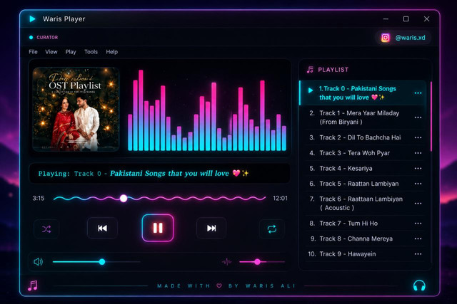

01
Flagship · Case study
Waris' Fav Songs Personal Music Playlist Experience
A personal web-based music playlist experience built from scratch during my 1st semester BCA. Features audio playback controls, custom modern UI, responsive layout, and visual album artwork.